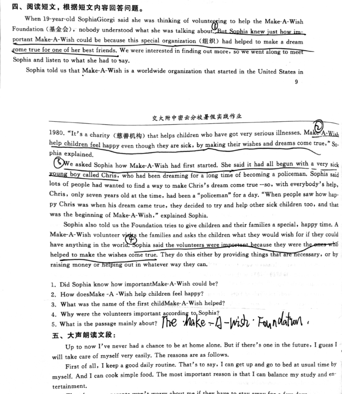
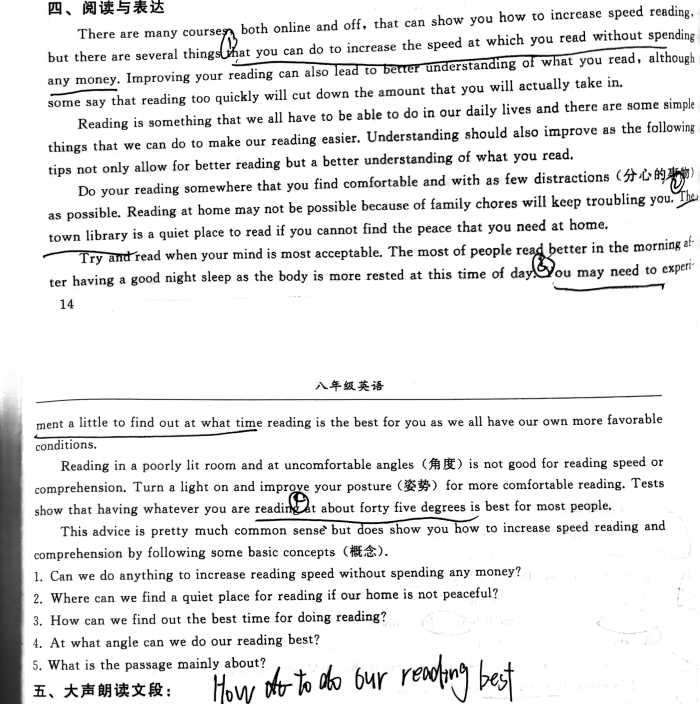
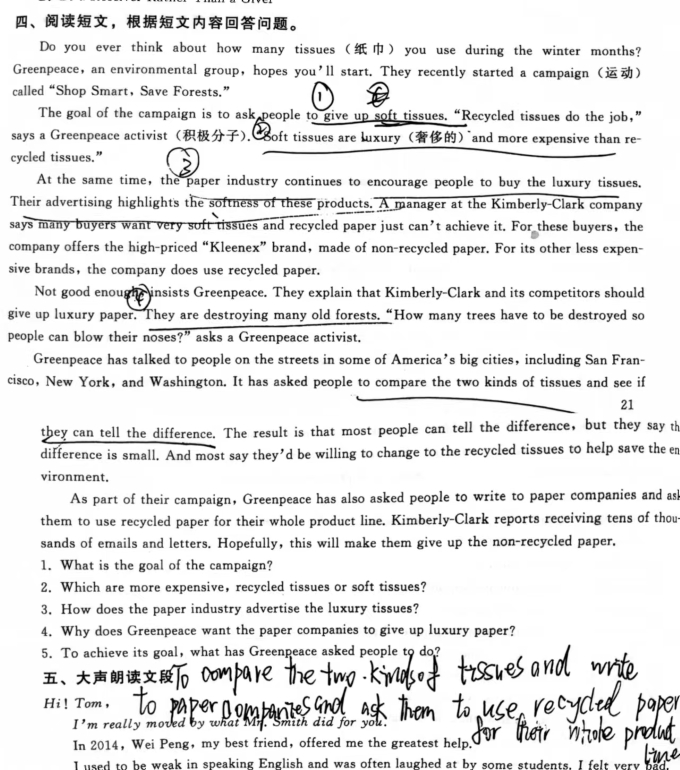
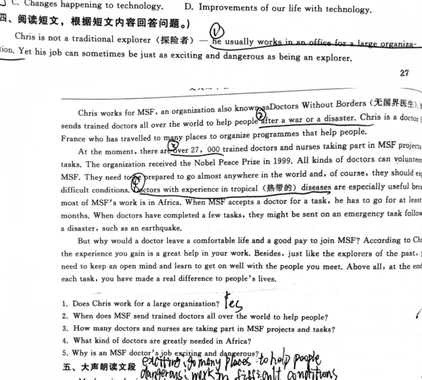
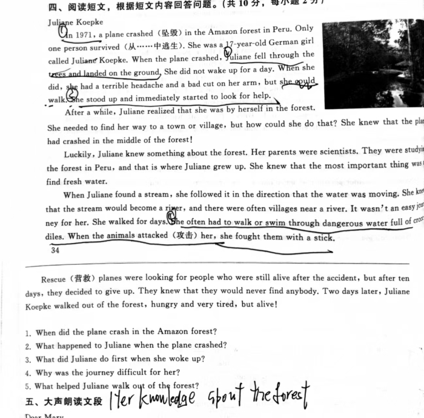
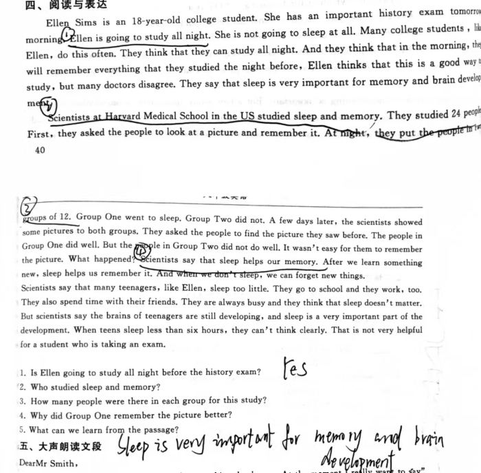
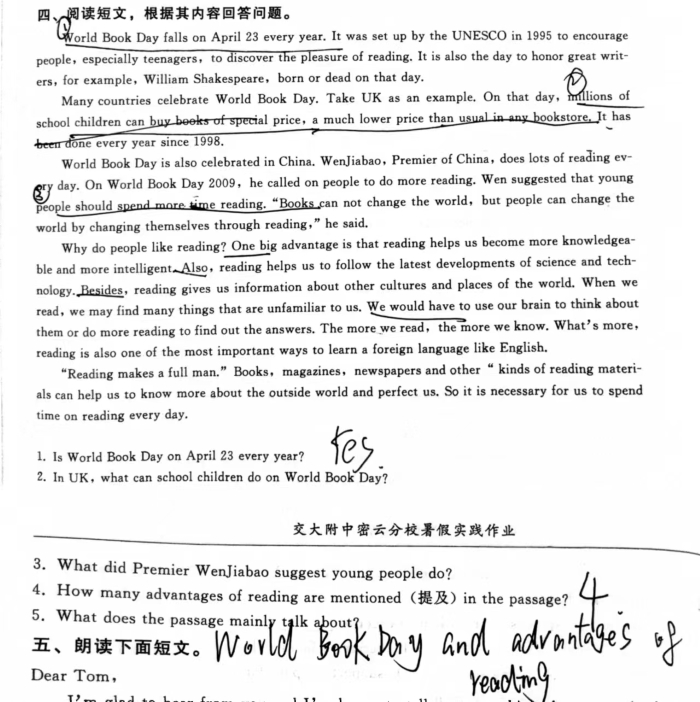
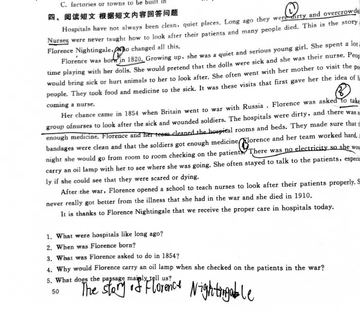
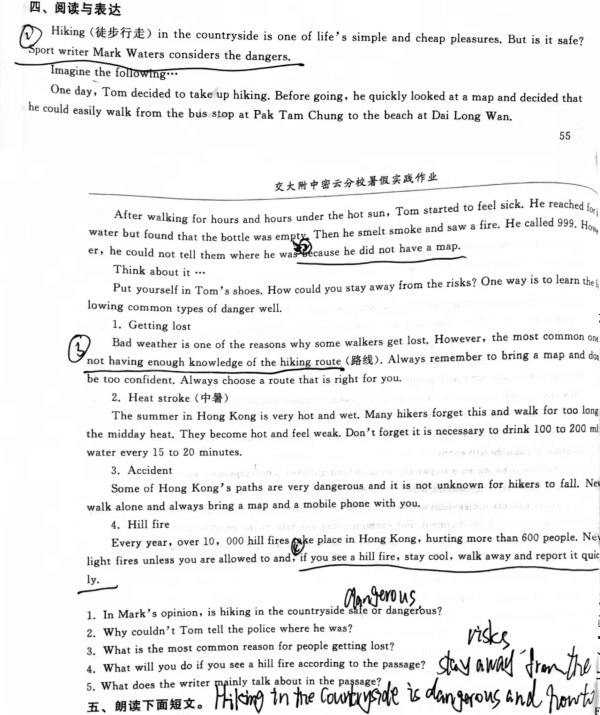
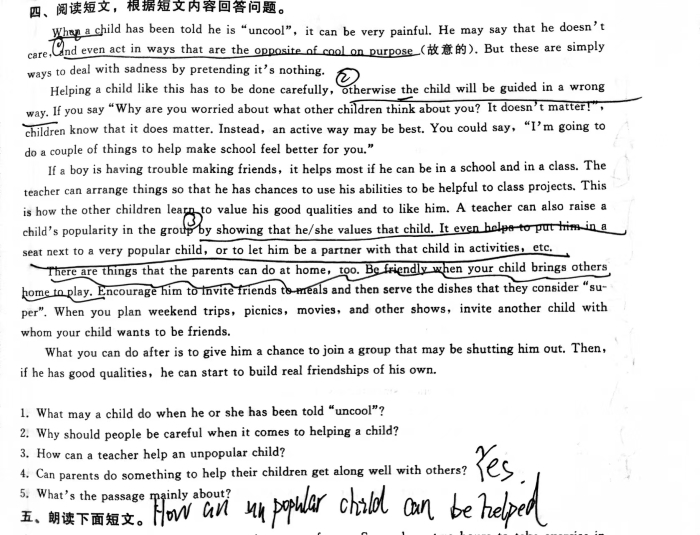

| 第一天 |
单选：CCBABADACB 完型: CBDACABADC
阅读：DAC ABCD ABCA 阅读短文：1.stan lee 2.one day,on a high school class trip to a science lab 3.soon peter realizes he has amazing powers 4.peter decide to use······and so spiderman is born 5.life is not easy for peter even though he is a super hero |
第二天 |
单选：CBBDAACACC 完型：BADCDCABDA 阅读：DAB BCDC BCDA
 |
第三天 |
单选：BAABCABDDD 完型：CDBAADBCADCB 阅读：ABD ACC CAD
 |
第四天 |
单选：CACBBABDBBCDA 完型：CBCAACBBDCBD 阅读：CAB BAB BDC CDDA
 |
|---|---|---|---|
| 第五天 |
单选：CCABAACDCB 完型：DAADBBBCCD 阅读：CBA ABBB BCDA ADDA
 |
第六天 |
单选：CACBDABCADCD 完型：BACDBABACBCD 阅读：BDB BADC AACD ADCB
 |
| 第七天 |
单选：ACADABCBDBACABA 完型：CBADBBADAADB 阅读：BBC BCDC BBC ABC
 |
第八天 |
单选：BCDBADCABA 完型：BCACCABCCB 阅读：CCD ABDC ADCB
 |
| 第九天 |
单选：BDACDCCDCD 完型：BBABDADCDA 阅读：ABDD DCDA BCBD
 |
第十天 |
单选：ADBDBACCDD 完型：BCDDABCDBABC 阅读：ACBD ABD BAC
 |
| 第十一天 |
单选：DCDCDDCBAA 完型：DACDBACDAB 阅读：DCA BBC DADB
 |